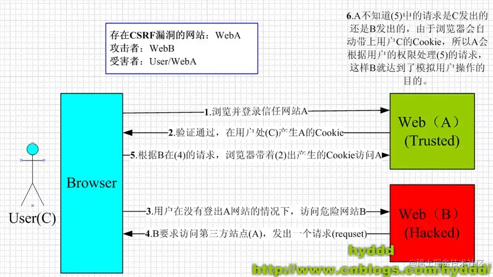

开发中,我们需要第三方组件,通过iframe引入,由于第三方不可控,带来的问题也会很多,比如第三方域名因为过期而被恶意攻击者抢注，或者第三方被黑客攻破，iframe中的内容别替换掉了，从而利用用户浏览器中的安全漏洞下载安装木马、恶意勒索软件等等.
这种时候,我们就要对第三方有足够的限制权,才能保障自己网站的安全.
html5的新属性sandbox，主要是提高iframe安全系数。
1 | <iframe sandbox src="..."> ... </iframe> |
当我们开发出精美的展示类页面,有些人会盗取我们的劳动成功,将我们精美的展示内容通过iframe引入到他们的网站.当然,只是展示的话问题不大,但如果我们的一些涉及安全隐私的页面被引入,诱导用户操作,获取用户信息就不太好了.
这时我们需要限制自己页面被引用
在自己页面加一下代码,禁止自己页面被iframe引入
1 | if (self!=top){ |
如果我们要引入自己的iframe组件,可以加层判断,不同域时才禁止iframe
1 | try{ |
使用X-Frame-Options: DENY这个HTTP Header相应头来明确的告知浏览器，不要把当前HTTP响应中的内容在HTML Frame中显示出来。
参数:
1 | DENY：当前页面不能被嵌套iframe里，即便是在相同域名的页面中嵌套也不允许,也不允许网页中有嵌套iframe |
如果在项目中需要 打开新标签 进行跳转一般会有两种方式
1 | window.open('http://www.xxx.com') |
1 | <a target='_blank' href='http://www.xxx.com'> |
通过这两种方式打开的页面可以使用 window.opener 来访问源页面的 window 对象。
场景：A 页面通过 <a> 或 window.open 方式，打开 B 页面。但是 B 页面存在恶意代码如下
window.opener.location.replace(‘https://www.bbb.com')
此时，用户正在浏览新标签页，但是原来网站的标签页已经被导航到了其他页面。
即使在跨域状态下 opener 仍可以调用 location.replace 方法。
1 | <a target="_blank" href="" rel="noopener noreferrer nofollow">a标签跳转url</a> |
1 | function openurl(url) { |
CSRF的重点是伪造,并不会直接对网站或用户进行攻击,一旦得逞,危害甚广.
大致场景:

利用img,javascript等能跨域标签,在恶意网站发送请求到银行,其中携带登录信息.
1 | <img src="http://bank.example/withdraw?amount=10000&for=hacker" > |
通常使用的是一个自动提交的表单,相当于模拟用户完成了一次POST操作
1 | <form action="http://bank.example/withdraw" method=POST> |
诱导用户点击到恶意网站
1 | <a href="http://test.com/csrf/withdraw.php?amount=1000&for=hacker" taget="_blank"> |
CSRF通常是跨域的，因为外域通常更容易被攻击者掌控。但是如果本域下有容易被利用的功能，比如可以发图和链接的论坛和评论区，攻击可以直接在本域下进行，而且这种攻击更加危险。
根据CSRF通常来自外域和冒充用户登录凭证(cookie)的特点,可以从两个方面出发:
XSS是一种代码注入攻击。攻击者通过在目标网站上注入恶意脚本，使之在用户的客户端上运行。利用这些恶意脚本，攻击者可获取用户的敏感信息如 Cookie、SessionID 等，进而危害数据安全。XSS在前后端不分离的开发模式中更易发生.因为由模板渲染,渲染在服务端,恶意代码被植入,到客户端解析被执行.
1 | <a href="<%= escapeHTML(getParameter("redirect_to")) %>">跳转...</a> |
DOM 中的内联事件监听器，如 location、onclick、onerror、onload、onmouseover 等，<a> 标签的 href 属性，JavaScript 的 eval()、setTimeout()、setInterval() 等，都能把字符串作为代码运行。如果不可信的数据拼接到字符串中传递给这些 API，很容易产生安全隐患，请务必避免。
1 | <!-- 内联事件监听器中包含恶意代码 --> |
根据XSS提交恶意代码和浏览器执行恶意代码的特点
现代大部分浏览器都自带 XSS 筛选器，vue / react 等成熟框架也对 XSS 进行一些防护
通常都是网络运营商的行为.
DNS劫持由于涉嫌违法,已经被监管起来,现在很少会有DNS劫持,而http劫持依然非常盛行.
最有效的办法就是全站HTTPS,将HTTP加密,这使得运营商无法获取明文,就无法劫持你的响应内容.
需要注意的是非全站HTTPS并不安全,比如首页http其他页是https,依然能从http页面截取信息
浅谈前端安全
前端安全系列（一）：如何防止XSS攻击？
前端安全系列之二：如何防止CSRF攻击？
网络劫持和HTTPS的安全